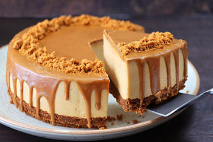

Aguacates 15min
Saludables aguacates rellenos de tomate, huevo duro y gambas
Ingredientes
- aguacate
- tomate
- gambas
- lechuga
- Abrimos los aguacates por la mitad, sacamos el relleno, lo ponemos en un bol y los chafamos con un tenedor
- Troceamos los tomates y picamos la lechuga y los añadimos
- Hacemos las gambas a la plancha, las picamos y las añadimos
- Ponemos los huevos a cocer y una ved cocidos los picamos y los añadimos
- Ponemos pimienta y sal al gusto.
- Removemos y rellenamos los aguacates.
Fotografia por Gemma Bartgues en bonviveur.es
https://www.bonviveur.es/recetas/aguacates-rellenos-de-atun

Tortilla de Patata 20min
Tradicional tortilla de patata con cebolla
Ingredientes
- 5 Patata
- 1 Cebolla mediana
- Aceite
- 3 Huevos
- Pelamos las patatas y las troceamos en cubos pequeños
- Picamos la cebolla muy fina
- Pochamos la cebolla y cundo este añadimos las patatas
- Cascamos y batimos los huevos
- Cuando la patata esté blanda la mezclamos en un bol con los huevos y añadimos sal al gusto
- Ponemos una sartén con aceite para que no se pegue y vertimos la mezcla de patatas con huevo
- Cuando empiece a cuajar le damos la vuelta y la dejamos un minuto más y servimos
Fotografía por Gente Despierta de Casa Dani RNE en RTVE
https://www.rtve.es/television/20220214/tortilla-patata-agria-cebolla-dulce-huevos-camperos/2290300.shtml
Canelones 3h
Canelosnes rellenos de carrillera con salsa de foie
Ingredientes
Canelones:
- 1kg de Carrilleras
- 800 ml. de Caldo de Verduras
- Pasta para Canelones
- 1 Cebolla Grande
- 2 Ajo
- 1 Hoja de Laurel
- 1 Ramita de romero
- Aceite de Oliva
- 80 ml. de Pedro Ximénez
Bechamel:
- 100 gr. de mantequilla
- 100 gr. de Harina Común
- 1 l. de Leche
- Nuez Moscada
- Sal y Pimienta
- Salpimentando las carrilleras por ambos lados y las doramos
- Troceamos la verdura y la añadimos junto con el laurel y Lo dejamos 10 minutos
- Añadimos Pedro Ximénez, tras evaporar el alcohol añadimos el caldo de verduras, romero y sal.
- Añadimos el caldo de verduras, un poquito de romero y un poco de sal.
- tampamos y con fuego al mínimo lo dejamos entre 40-50 minutos
- las sacamos y dejamos toda la verdura dentro de la cazuela.
- Batimos la verdura y desmenuzamos las carrilleras mezclandolas con la salsa.
- Derretimos la mantequilla y añadimos la harina y la leche miestras removemos
- Añadimos el foie y batimos con la batidora hasta que se integre y espese a nuestro gusto
- Ponemos las placas de los canelos a hervir lo que indica el fabricante
- Las pasamos a agua fría para cortar la cocción y posteriormente las secamos con un paño húmedo y los rellenamos
- añadimos bechamel en una fuente, colocamos los canelones y cubrimos con bechamel, parmesano rallado y gratinamos
Fotografia por Una Bruja en la Cocina Blog
https://unabrujaenlacocinablog.wordpress.com/2018/02/28/canelones-de-pato-manzana-y-foie-juego-de-blogueros-2-0/
Flores 20min
Postre de semanasanta flores bañadas en azucar
Ingredientes
- 6 Patata
- 1 Cebolla pequeña
- Aceite
- 3 Huevos
- Batimos en un bol los huevos con el azúcar hasta que blanqueen
- Añadimos al bol con los huevos, la leche, un pellizco de sal, la harina de trigo, la ralladura de los limones y el licor de anís
- Batimos hasta que nos quede una crema de la consistencia densa parecida a la de las natillas
- Para poder hacer las flores debemos de tener un molde especial de hierro con forma de flor,
- Ponemos una sartén honda con abundante aceite de girasol
- Cuando el molde ya se encuentre muy caliente introducimos el molde en la crema, pero sin llegar al borde, sólo un centímetro de su altura más o menos, este dato es muy importante para que la flor se desprenda luego sin dificultad.
- Lo apoyamos en el fondo de la misma y pasados unos segundos al levantar el molde se desprendera
- Cuando esté despegada, la dejamos unos instantes que acabe de freírse y la sacamos cuando está dorada.
Fotografia por María Ángeles Fernández en bonviveur.es
https://www.bonviveur.es/recetas/flores-de-carnaval

Tarta Lotus 40min + 4h
Tarta de galleta lotus cubierta de crema lotus
Ingredientes
- Galletas Lotus (150g)
- Mantequilla (75g)
- Crema Lotus (300g - 200g + 100g decoración)
- Queso Philadelphia (350g)
- Trituramos la galleta Lotus y la juntamos con la mantequilla derretida y hacemos la base en un molde de 15cm
- Unimos los huevos, el queso y la crema de Lotus, batimos y vertemos en el molde con la base de galleta
- Horneamos a 200° durante 20 minutos y después dejamos con el horno apagado 8 minutos más
- Dejamos reposar hasta que temple, refrigeramos 4 horas y decoramos a nuestro gusto
Fotografia por Manuel Galarreta en Cocinatis
https://www.cocinatis.com/receta/tarta-lotus.html